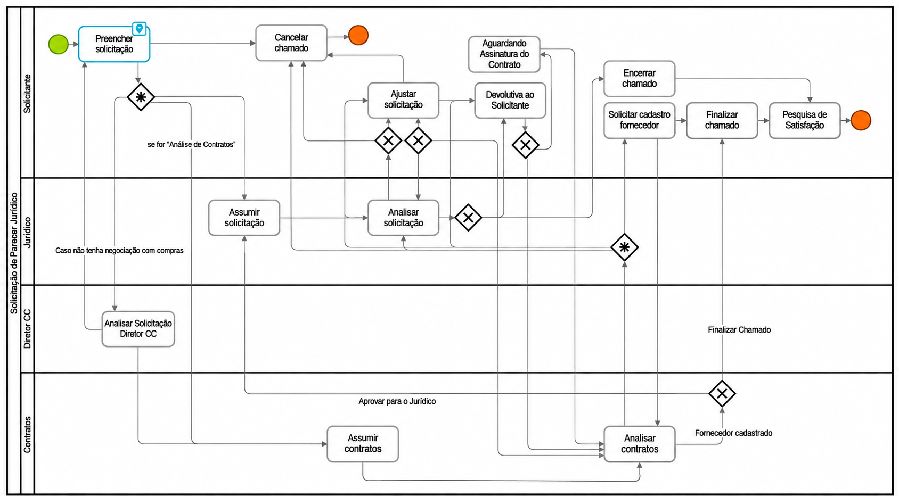
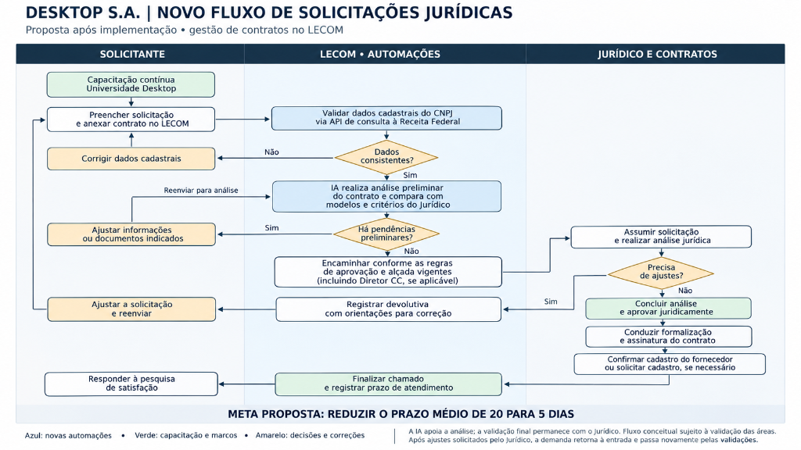

TÉCNICO EM ADMINISTRAÇÃO – SENAI
Projeto de Conclusão de Curso
JURÍDICO & CONTRATOS
EQUIPE DO PROJETO
Quem somos?
CONTEXTO INSTITUCIONAL
INTRODUÇÃO
Quem é a DESKTOP
Com 0 anos no mercado, é uma das principais operadoras de internet banda larga e fibra óptica do estado de São Paulo, conectando centenas de milhares de clientes.
Setor envolvido: Jurídico
Área estratégica responsável pelo compliance, mitigação de riscos contratuais, validação legal e formalização de parcerias com fornecedores e clientes corporativos.
Papel do SENAI
Foco no estímulo ao aprendizado prático dos alunos do curso Técnico em Administração e na proposição de soluções concretas e inovadoras para as problemáticas da DESKTOP.
INTRODUÇÃO / DESAFIOS
DOR RELATADA - Solicitação de Parecer Jurídico
LEVANTAMENTO & IMERSÃO
Mapeamento e Diagnóstico dos Processos
Alinhamento Técnico com o Jurídico
Realização de reuniões com a advogada Winnie Prudente, do setor Jurídico, para compreender os processos atuais e identificar gargalos e oportunidades de melhoria.
Entrevistas com Solicitantes e Equipe
Entrevistas com colaboradores do Jurídico e das demais áreas solicitantes, identificando dificuldades na comunicação, nos prazos, nas informações e na padronização das solicitações.
Análise e Definição de Prioridades
Análise detalhada das informações coletadas para identificar as causas raízes dos problemas operacionais e definir prioridades estratégicas de atuação.
Propostas de Melhoria Customizadas
Desenvolvimento de propostas de melhoria práticas e inovadoras, alinhadas às necessidades dos colaboradores e à realidade do setor.
MAPEAMENTO DE PROCESSO EM RAIAS
Fluxo Atual: Seção AS-IS
Mapeamento ponta a ponta das solicitações de parecer jurídico e análise de contratos entre as 4 raias organizacionais:

DIAGNÓSTICO DOS CHAMADOS ENCERRADOS
Diagnóstico: Tempo de resolução e Retrabalho
Mediana de dias corridos
A diferença é de mais de 5 vezes.
Nos 5.193 chamados analisados
- Ao menos 1 etapa rejeitada64,8%
- Ao menos 2 etapas rejeitadas44,6%
- Ao menos 3 etapas rejeitadas32,5%
Base: 5.193 chamados encerrados (aprovados ou rejeitados) entre 2022 e 2026. Tempo medido da abertura à última etapa finalizada, em dias corridos.
METODOLOGIA APLICADA
Ferramentas Utilizadas para Mapear o Processo
ANÁLISE DE CAUSAS-RAIZ
Diagrama de Ishikawa
Por que o problema de lentidão e retrabalho acontece?
PLANO DE AÇÃO INTEGRADO
Nossas Propostas
Como o grupo estruturou a solução?
A partir do diagnóstico das causas-raizes levantadas no Ishikawa — como preenchimentos manuais inconsistentes, falta de validação prévia de minutas e dúvidas recorrentes dos solicitantes —, e através das ferramentas utilizadas para mapear o processo, nós definimos uma estratégia baseada em dois pilares complementares: Tecnologia e Automação no LECOM e Capacitação Contínua de Pessoas.
SOLUÇÃO PROPOSTA
Proposta: Implementações no Lecom
Análise Inteligente de Contratos
Implementação de Inteligência Artificial na plataforma LECOM para analisar contratos automaticamente, identificando informações ausentes e inconsistências antes da avaliação jurídica, reduzindo retrabalho e agilizando o processo.
Validação Cadastral Automatizada
Integração da plataforma LECOM com a Receita Federal, via API, para validar automaticamente os dados cadastrais das empresas pelo CNPJ, reduzindo erros, divergências e conferências manuais.
Assistente FAQ via Chat
Disponibilização de um assistente virtual interativo via chat diretamente na plataforma LECOM, auxiliando o colaborador com respostas instantâneas para dúvidas frequentes de preenchimento e critérios do Jurídico.
DEMONSTRAÇÃO PRÁTICA
Demonstração no LECOM
EDUCAÇÃO CORPORATIVA
Proposta: Capacitação dos Solicitantes
Capacitação dos Solicitantes
Disponibilização de treinamentos na plataforma Universidade Desktop para orientar os colaboradores sobre o preenchimento correto das solicitações e o envio da documentação necessária, reduzindo erros, padronizando os processos e diminuindo as devoluções pelo setor Jurídico.
Pessoas no Ishikawa
A capacitação se relaciona às causas identificadas na dimensão Pessoas do Ishikawa:
- Treinamento não padronizadoTrilhas comuns para orientar o preenchimento e o envio de documentos.
- Conhecimento não documentadoGuias e checklists para registrar e compartilhar as orientações.
- Sobrecarga da equipeMaior autonomia dos solicitantes para reduzir dúvidas e devoluções evitáveis.
DEMONSTRAÇÃO PRÁTICA
Demonstração na Universidade Desktop
PLANO ESTRATÉGICO & PROPOSTAS
Nossos Objetivos
- Tempo de resolução: estimativa de reduzir em 50% o tempo de resolução dos chamados;
- Menos retrabalho: reduzir devoluções e ajustes recorrentes;
- Informações completas: padronizar dados e documentos desde a abertura;
- Validação cadastral: identificar inconsistências antes da análise jurídica;
- Solicitantes capacitados: ampliar a autonomia e melhorar a comunicação entre áreas.
Metas propostas, sujeitas à validação em piloto. A decisão final permanece com o Jurídico.
NOVO FLUXO DE SOLICITAÇÕES JURÍDICAS
Fluxo Futuro: Seção TO-BE
Proposta após implementação da IA e automações na gestão de contratos no LECOM.

META PROPOSTA: ESTIMATIVA DE REDUÇÃO DE 50% NO TEMPO DE RESOLUÇÃOCONSIDERAÇÕES FINAIS
Conclusão
A integração de Inteligência Artificial, a validação cadastral automatizada via API e a capacitação contínua na Universidade Desktop têm como objetivo tornar a gestão jurídica mais ágil e padronizada, com menos retrabalho. A referência histórica de tempo de resolução é de 20 dias corridos (mediana), e a estimativa é reduzir em 50% o tempo de resolução dos chamados, sujeita à validação.
TÉCNICO EM ADMINISTRAÇÃO • SENAI & DESKTOP S.A.